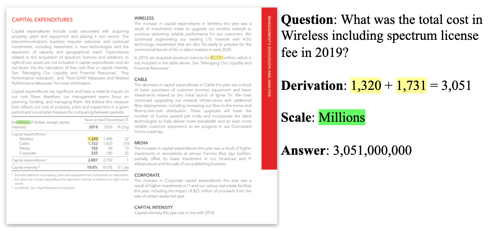

TAT-DQA is a large-scale Document VQA dataset, which is constructed by extending the TAT-QA. It aims to stimulate progress of QA research over more complex and realistic visually-rich documents with rich tabular and textual content, especially those requiring numerical reasoning.
The unique features of TAT-DQA include:
In total, TAT-DQA contains 16,558 questions associated with 2,758 documents ( 3,067 document pages ) sampled from real-world financial reports.
The following is an example of TAT-DQA. The left is a given visually-rich document. The right are a question associated with the document, the derivation to compute the answer value, the scale of the numerical answer and the final answer.

{
"pages": [ # The document content are stored by page, each page will be one element in this array
{
"bbox": [ # The dimension of this document page, [x1, y1, x2, y2]. (x1, y1) is the top left of the page while (x2, y2) is the bottom right
0,
0,
1239,
1754
],
"blocks": [ # The document content are stored by blocks for each page
{
"bbox": [
34,
50,
174,
71
],
"uuid": "8f1e47dc-af67-485d-b269-057f06e8714c", # The unique ID of the block
"text": "Table of Contents", # The text content of the block
"words": { # The word list of the content for this block
"word_list": [
"Table",
"of",
"Contents"
],
"bbox_list": [ # The corresponding bounding box of each word in the word list
[
34,
50,
75,
71
],
[
84,
50,
100,
71
],
[
108,
50,
174,
71
]
]
},
"order": 1 # The order of the block in this page, starting from 1
},
...
]
}
]
}
{
"doc": {
"uid": "11ba155b7577c83fe5f3c4f766039e93", # The unique id of the document, {uid}.pdf and {uid}.json are the given PDF document and the OCR result of the PDF
"page" : 1, # The starting page no. of the document that is relevant to the QA pairs
"source": "navios-maritime-holdings-inc_2019.pdf" # The financial statement that this doc comes from
},
"questions": [ # The questions associated to the given document
{
"uid": "9dfd4a8d0b9e91c2ab5ab4a8745226c6", # The unique id of a question
"order": 6, # The order of the question in all questions, starting from 1
"question": "What was the change in Impairment losses between 2017 and 2018?", # The question itself
"answer": 150092, # The ground-truth answer
"derivation": "200,657-50,565", # The derivation that can be executed to arrive at the ground-truth answer
"answer_type": "arithmetic", # The answer type including `span`, `spans`, `arithmetic` and `counting`.
"scale": "thousand", # The scale of the answer including `None`, `thousand`, `million`, `billion` and `percent`
"req_comparison": false, # A flag indicating if `comparison/sorting` is needed to answer the question whose answer is a single span or multiple spans
"facts": [ #[Optional] The facts or evidencies used to infer the final answers, which are generated heuristically
"200,657",
"50,565"
],
"block_mapping": [ # The facts' positions in the OCR result of the given document.
{
"69352448-14ad-4854-87a9-3ac44358a660": [
26,
32
]
},
{
"69352448-14ad-4854-87a9-3ac44358a660": [
18,
25
]
}
]
...
]
}
| Rank | Model Name | Team Name | Exact Match | F1 | Created | Paper | Codes |
|---|---|---|---|---|---|---|---|
| - | Human Performance | - | 84.1 | 90.8 | - | - | - |
| 1 | TAT-LLM (70B) | NExT | 76.5 | 83.9 | 20 Jan 2024 | Paper | N.A. |
| 2 | TAT-LLM (13B) | NExT | 72.2 | 80.5 | 20 Jan 2024 | Paper | N.A. |
| 3 | TAT-LLM (7B) | NExT | 71.3 | 80.2 | 20 Jan 2024 | Paper | N.A. |
| 1 | Doc2SoarGraph | NExT | 59.2 | 67.6 | 10 Jan 2023 | Paper | Codes |
| 2 | Baseline - MHST | NExT | 41.5 | 50.7 | 10 Aug 2022 | Paper | N.A. |
To evaluate your models, we have also made available the evaluation script we will use for official evaluation, To run the evaluation, use
python tatqa_eval.py --gold_path=:path_to_dev --pred_path=:path_to_predictions
The predictions file in JSON format contains a dictionary with question ids as keys and the predictions as values (each prediction shall include both `answer` and `scale` in an array). For example,
{
"9337c3e6-c53f-45a9-836a-02c474ceac16": [
"4.6",
"percent"
],
"c4170232-e89c-487a-97c5-afad45e9d702": [
"16",
"thousand"
],
"d81d1ae7-363c-4b47-8eea-1906fef33856": [
["2018", "2019"],
""
]
...
}
We also provide a sample prediction file (on Dev) for your reference.
python tatqa_eval.py --gold_path=dataset_raw/tatqa_dataset_dev.json --pred_path=sample_prediction.json
Please email the prediction file of the test set with the following information to us:
Please give us up to two weeks to evaluate your submission and we will add your model to the leaderboard.
The TAT-DQA dataset is under the license of Creative Commons (CC BY) Attribution 4.0 International.
For more information, please contact:
Please kindly cite our work if the dataset helps your research.
@inproceedings{zhu-etal-2021-tat,
title = "{TAT}-{QA}: A Question Answering Benchmark on a Hybrid of Tabular and Textual Content in Finance",
author = "Zhu, Fengbin and
Lei, Wenqiang and
Huang, Youcheng and
Wang, Chao and
Zhang, Shuo and
Lv, Jiancheng and
Feng, Fuli and
Chua, Tat-Seng",
booktitle = "Proceedings of the 59th Annual Meeting of the Association for Computational Linguistics and the 11th International Joint Conference on Natural Language Processing (Volume 1: Long Papers)",
month = aug,
year = "2021",
address = "Online",
publisher = "Association for Computational Linguistics",
url = "https://aclanthology.org/2021.acl-long.254",
doi = "10.18653/v1/2021.acl-long.254",
pages = "3277--3287"
}
@misc{zhu2022towards,
doi = {10.48550/ARXIV.2207.11871},
url = {https://arxiv.org/abs/2207.11871},
author = {Zhu, Fengbin and Lei, Wenqiang and Feng, Fuli and Wang, Chao and Zhang, Haozhou and Chua, Tat-Seng},
title = {Towards Complex Document Understanding By Discrete Reasoning},
publisher = {arXiv},
year = {2022}
}